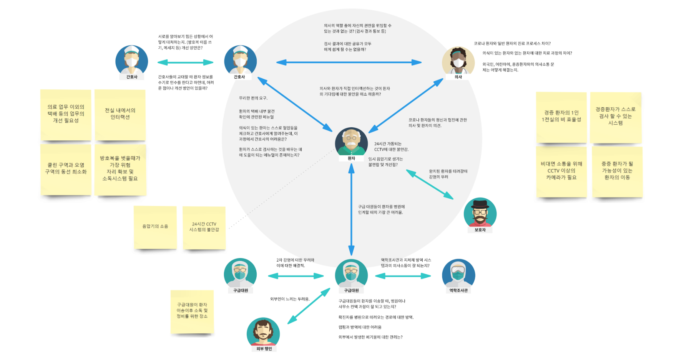
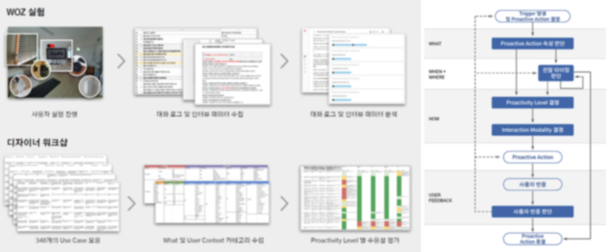
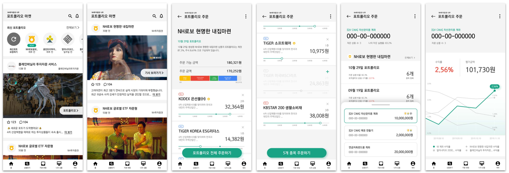
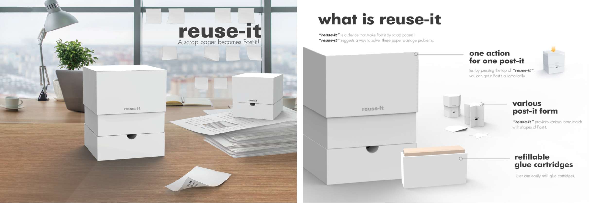

user study
interview
user journey
New Deal Project on Science and Technology for COVID-19.
Government of Republic of Korea | KAIST MCM Research Center

We developed an interaction model and exploring design considerations for proactive conversational agents. To examine major elements of proactive agents interaction, we conducted design workshops and content analysis.
user study
interview
user journey

Developing Interaction model of proactive voice agent.
Samsung Electronics | UX Solution Group

We developed an interaction model and exploring design considerations for proactive conversational agents. To examine major elements of proactive agents interaction, we conducted design workshops and content analysis.
designer workshop
interaction model
Improving mobile investment portfolio market UI/UX platform
NH Investment & Securities | UX Solution Team

In this project, we designed a portfolio market application of stock investment service that encourages users to make continuous investments based on their interests. To extract design directions, we conducted a heuristic evaluation, user interviews, and market research.
heuristic evaluation
ux/ui design
Redesigning mobile account opening system
NH Investment & Securities | UX Solution Team

In this paper, we introduce a crowdsourcing platform that generates subtitles in order to produce barrier-free movies for people with hearing impairments. This paper describes the results of a pilot study that identifies design guidelines and approaches for generating accessible subtitles. We propose ALLSUB, a crowdsourcing platform that enables web users to produce descriptive captions of short video clips. The ultimate goal of this project is to provide opportunities for people with hearing impairment to access much more movies without barriers by gathering works from the community.
heuristic evaluation
ux/ui design
reuse-it: a scrap paper becomes Post-it!
2019 Dyson Design award - National Winner

How many printed papers did you just throw away? Everyone has a lot of scrap papers on their desks, but there is no way to make effective use of them. To solve this problem, our product, named Reuse-it can make scrap paper into post-it! Reuse-it is a device that makes post-it by scrap papers. It can suggest a way to solve the paper wastage problem. When you need a post-it, just by putting paper in and pressing the button, we can easily make this paper into a post-it.
Pollo:a roundish 2-in-1 heating appliances
Graduation Exhibition


A 'Pollo' is a roundish heating appliance with microwave and induction functions. Unlike the existing rectangular shape, it follows the round shape of dishes. Also it brought a design motif in the shape of a chicke.